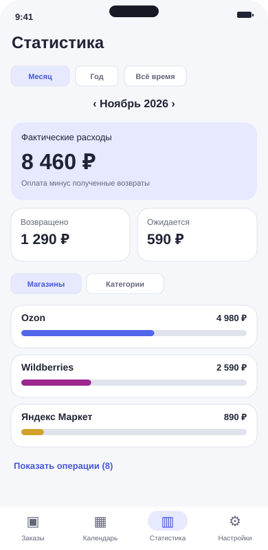
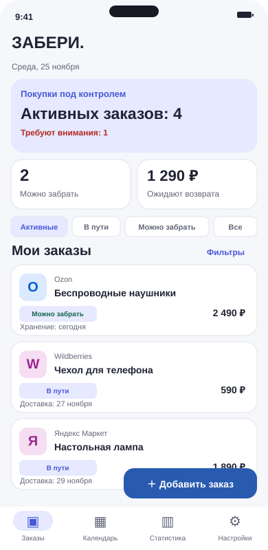

Все заказы в одном месте
Покупки из любых магазинов. Статусы, категории, поиск, группировка по пунктам выдачи и фотографии.
Не забывайте забрать заказ, не теряйте деньги на возвратах и знайте, сколько действительно тратите. Все покупки в одном приложении.
Без регистрации · основные функции работают офлайн


От заказа до получения, от возврата до реальных расходов. Управляйте покупками без лишних таблиц и десятка вкладок.
Покупки из любых магазинов. Статусы, категории, поиск, группировка по пунктам выдачи и фотографии.
Напоминания о доставке, хранении и возвратах. Календарь показывает ближайшие события.
Отмечайте полные и частичные возвраты, отслеживайте ожидаемые суммы и исправляйте статусы.
Фактические расходы с учётом полученных возвратов, разбивка по магазинам и категориям.
Сохраняйте адреса вручную или на карте. Открывайте маршрут в картографическом приложении.
Защищённые паролем резервные копии, перенос данных и экспорт истории расходов в таблицу.
Посмотрите, как удобно управлять заказами, следить за сроками и контролировать расходы. Выберите интересующий экран.
Заказы · пример интерфейса
Укажите товар, магазин, сумму и нужный срок.
Заглядывайте в календарь и получайте напоминания.
Получение, возвраты и фактические расходы останутся в истории.
Ваши покупки остаются только у вас. Мы не храним ваши заказы, фотографии и историю покупок на своих серверах. Все данные о покупках находятся на вашем телефоне.
Политика конфиденциальности ↗Нет. Для основных функций не нужны регистрация и интернет.
Нет. Вы самостоятельно добавляете и обновляете информацию. Приложение не подключается к аккаунтам магазинов и банков.
На вашем телефоне. Ваши заказы и история покупок не хранятся на наших серверах. Подробнее — в политике конфиденциальности.
Да. Создайте резервную копию с паролем и восстановите её на другом устройстве. Храните пароль отдельно.
Да, приложение бесплатное. В нём есть реклама.
ЗАБЕРИ. уже доступно в RuStore. Открыть карточку приложения.
Уже в RuStore! Скачайте бесплатно на Android 8.0 и новее.